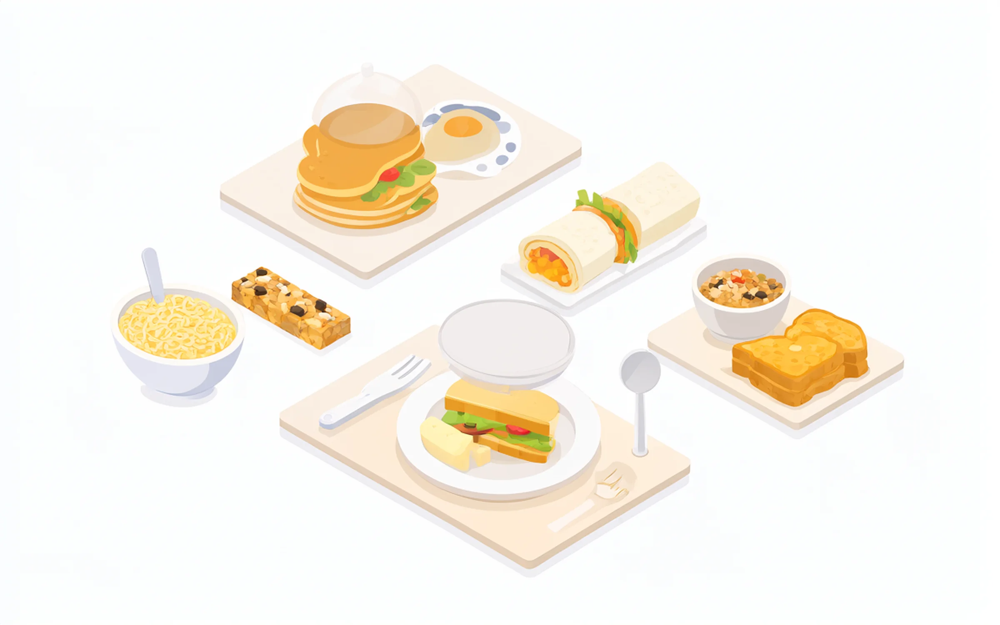
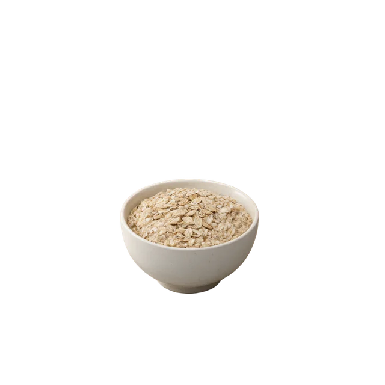
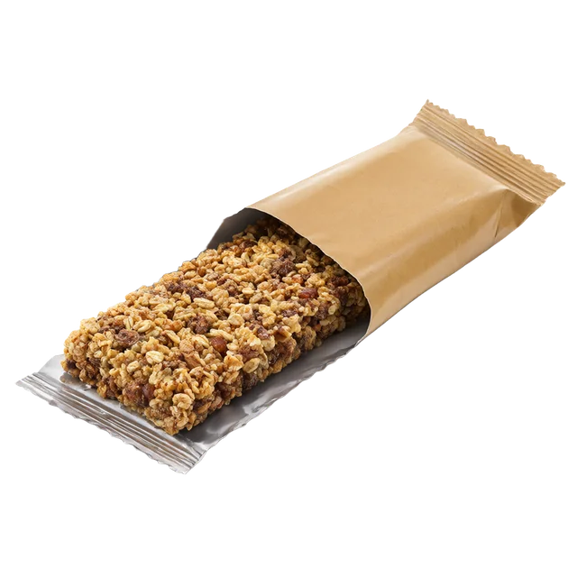
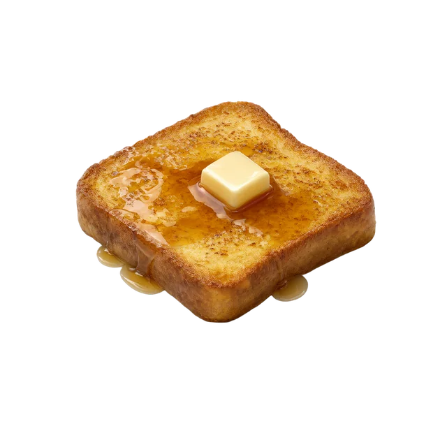

厨房
家居
服装
食物
身体部位
美妆与护肤
出行
Breakfast
早餐
场景
卡片
女声
男声

指到或点一下物品
再听一次
pancakes
breakfast sandwich
instant oatmeal
granola bar
french toast
breakfast burrito
instant noodles
pancakes
松饼
breakfast sandwich
早餐三明治

instant oatmeal
即食燕麦

granola bar
麦片棒

french toast
法式吐司
breakfast burrito
早餐卷饼
instant noodles
方便面
‹ Baking 烘焙
食物
Deli 熟食 ›